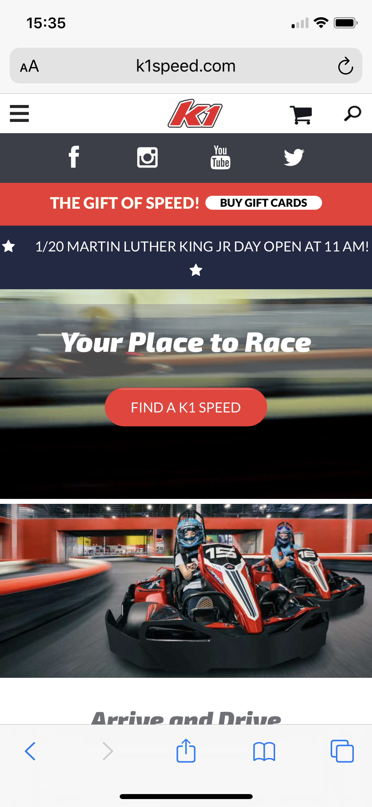
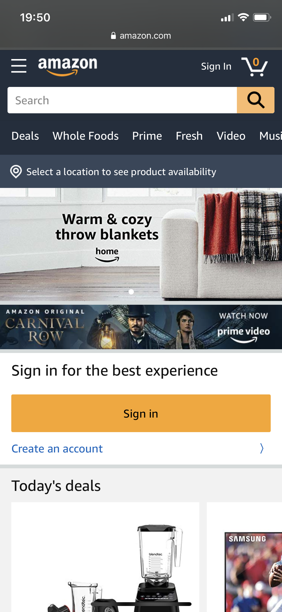

In this article I will cover three distinct design principles specifically related to how the page is viewed
on a small screen, such as a mobile phone. All images in this article are taken as screenshots from an
iPhone 11 Pro.
Hick's Law


As shown in this website k1speed they are using Hick's Law, which
offers few choices to make a decision quicker. Within these two images you can see the that you are
given a menu a special announcement and then a choice on how you would like to experience your time at
one of their locations. You are first given a link to locate a track, then individual or group events.
Proximity


When looking at Proximity as it relates to design principles I am going to look at amazon for reference. Here you can see at the top of the page we get an
ad for a product then another for a video. Following that are “Today’s deals” which scrolls to the
right on various products that are having a sale. As we scroll down, a new section is in place and
that is “Overstock deal categories” which is in a grid layout for various item types and then a
second set of promotions for overstock items. By doing this all of the items are placed in proximity
to each other related to the same promotion. As the page refreshes other categories would be
provided and be in proximity to each other.